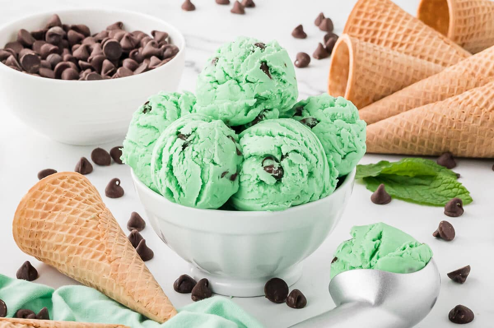

Home
Mint Chocolate Chip Ice Cream

Description
This mint chocolate chip ice cream is made in an ice cream maker with milk, cream, sugar, peppermint extract, and lots of chocolate chips. I discovered using 2% milk in the recipe makes the ice cream taste lighter.
Super refreshing on a hot summer day!
Ingredients
- 2 cups 2% milk
- 2 cups heavy cream
- 1 cup sugar
- 1 teaspoon vanilla extract
- ½ teaspoon salt
- 3 drops green food coloring (optional)
- 1 cup miniature semisweet chocolate chips
Steps
- Stir milk, cream, sugar, vanilla, peppermint extract, and salt together in a large bowl until the sugar has dissolved. Mix in green food coloring.
- Pour mixture into an ice cream maker and freeze according to manufacturer's instructions.
- Add chocolate chips about 10 minutes into the freezing. Continue churning until ice cream has thickened, about 20 minutes more.
- Transfer to an airtight container and freeze until firm, about 2 hours.